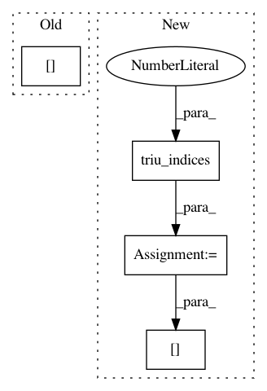

3544c70a5c7e63d172baacb9b380a613f1fa92e0,tslearn/metrics.py,,cdist_dtw,#Any#Any#Any#Any#Any#Any#,597
Before Change
// TODO
return njit_cdist_dtw_self(
dataset1,
global_constraint_code[global_constraint_str],
sakoe_chiba_radius, itakura_max_slope)
else:
dataset2 = to_time_series_dataset(dataset2)
After Change
// Inspired from code by @GillesVandewiele:
// https://github.com/rtavenar/tslearn/pull/128//discussion_r314978479
matrix = numpy.zeros((len(dataset1), len(dataset1)))
indices = numpy.triu_indices(len(dataset1), k=1, m=len(dataset1))
matrix[indices] = Parallel(n_jobs=n_jobs)(
delayed(dtw)(
dataset1[i], dataset1[j],
global_constraint=global_constraint,
In pattern: SUPERPATTERN
Frequency: 3
Non-data size: 4
Instances
Project Name: rtavenar/tslearn
Commit Name: 3544c70a5c7e63d172baacb9b380a613f1fa92e0
Time: 2019-08-18
Author: romain.tavenard@univ-rennes2.fr
File Name: tslearn/metrics.py
Class Name:
Method Name: cdist_dtw
Project Name: statsmodels/statsmodels
Commit Name: 1bb7f603f00783801b57d114c0eeea0c55950174
Time: 2020-08-25
Author: ezequiels.90@gmail.com
File Name: statsmodels/robust/scale.py
Class Name:
Method Name: _qn_naive
Project Name: geomstats/geomstats
Commit Name: c395e00c7ae67ae0559a7418dba379719c128a0a
Time: 2020-01-17
Author: stefan.heyder@gmail.com
File Name: geomstats/geometry/skew_symmetric_matrices.py
Class Name: SkewSymmetricMatrices
Method Name: basis_representation